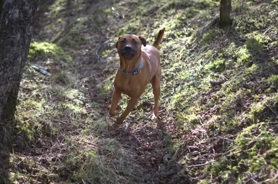

What We Leave Behind
What is left of a person once they are gone? Not the soul, or heaven, or reincarnation, or whatever you do or do not believe waits for us on the far side. Not the body either, the slow quiet chemistry of what happens to us in the ground (which is described in hilarious detail in Stiff: The Curious Lives of Human Cadavers by Mary Roach, and one I highly recommend). Something more important is left behind, both for us and for those in the future who might find the impact of our lives: the things that leave a marker, that state "I was here". I think a lot of us think about what we are worth, our purpose, and what we leave behind. I've read into this a little and accumulated thoughts on it throughout personal journals, and here I pull together my thoughts.
Some of those dents are physical, and a handful of them will outlast our entire species. A future species, perhaps something non-mammalian, with wings or scales or something entirely alien, may stumble across our final offerings to the universe. Some are ideas that keep walking around inside other people long after the person who first had them has stopped. And some are so small and so private that only loved ones retain. So here is the question that started this whole thing off, the one I want to chase from the cosmic scale right down to the kitchen table: a million years from now, with every last one of us long gone, what is actually left? What does the Earth remember of us?
Quick jargon guide
- Anthropocene: the proposed name for our current geological interval, the one in which human activity became the dominant force shaping the planet's surface, climate, and rock record. Geologists are still arguing about exactly when it begins.
- Isotope: a particular variant of an element, distinguished by how many neutrons sit in its nucleus. Some isotopes are stable; some are radioactive and decay over time.
- Plutonium-239: a radioactive isotope that barely exists in nature and is produced in reactors and weapons. Atmospheric nuclear testing scattered it worldwide, making it a clean global marker in the rock.
- Half-life: the time it takes for half of a radioactive sample to decay. Plutonium-239's is about 24,100 years, which is why its trace lingers for so long.
- Golden spike: geologists' term for the single agreed reference point in the rock that defines the start of a time interval. The nuclear-fallout layer is a leading candidate for the Anthropocene's spike.
- Ochre: a natural earth pigment, coloured by iron oxide, used for tens of thousands of years to paint and stencil on rock.
- Pulsar: a rapidly spinning, dense remnant of a dead star that sweeps a beam of radiation past us at an extremely regular rate, like a lighthouse. Each one blinks at its own precise tempo.
- Heliosphere: the vast bubble of charged particles blown outward by the Sun's solar wind, stretching billions of kilometres in every direction. Everything inside it is, in some sense, still within the Sun's reach.
- Heliopause: the outer boundary of the heliosphere, where the solar wind finally runs out of pressure against the gas of interstellar space. Cross it and you are, by one common definition, in true interstellar space. Both Voyager probes have now passed it.
- Cultural transmission: the passing of behaviours, ideas, and habits from person to person by learning and imitation rather than by genes.
Picture a geologist ten million years from now: not human, never met one of us, digging patiently through the compressed rock of what used to be a continent. For almost all of our story there is nothing for them to find. Ten thousand years of farming, cities, empires, and cat videos is, at the scale of stone, as thin as a single coat of paint, and the planet has recycled and changed most of what we left: buildings, concrete, plants, pets, art, music, machines. And then their trowel reaches one particular band, a few centimetres thick, and they raise their eyebrows equivalent.
In that thin dark line there is plastic, pressed into the rock in quantities that appear nowhere before it and, hopefully, nowhere after. There is a sudden surplus of aluminium in a refined metallic form that essentially does not occur on its own; nature keeps its aluminium locked up inside other minerals, so a sheet of the pure metal is as obvious a fingerprint as a dropped tool. There is soot, and concrete, and the chemical residue of a few billion engines. And threaded all the way through it, landing at the exact same instant everywhere on the planet, there is plutonium-239.
.jpg)
Image source: Wikimedia Commons (US Government, public domain). License details are listed on the file page.
Plutonium-239 is almost absent from the natural world. The reason it is now smeared in a tidy global layer is that between 1945 and the early 1960s we spent a good jolly while detonating nuclear weapons in the open air, peaking in 1961 and 1962, and the fallout drifted gently down over everything, everywhere on earth. It has a half-life of a little over twenty-four thousand years, which means a readable trace of it will still be sitting in the rock, shooting out alpha particles, for something like a hundred thousand years. The geologists won't argue much about when our era was, because it is the cleanest line we have ever drawn. We signed our name in the planet's crust, and we did it with bombs and nuclear waste. Well, that's a depressing start to this piece isn't it?
Nobody fired a weapon in order to be remembered by a future that would not exist for ten million years, but physics has raised a red flag, or more, laid a radioactive sediment in the ground, to describe us. The most durable mark our species has made so far is a byproduct of some of our worst imaginings, creations and decisions. But running right alongside that accidental signature is something far older and more deliberate.
In Cixin Liu's novel Death's End, the last book of his Three-Body trilogy, there is a moment I think about frequently, and that inspired the article. Humanity needs to leave a message that can survive not centuries but hundreds of millions of years, and the characters work their way down the list of every clever medium we have ever invented. Digital storage decays. Servers rot, formats are forgotten, and the denser and cleverer the encoding, the faster it dies. They keep going, discarding option after option, until they arrive at the oldest and simplest technology, the only thing that reliably survives that kind of time. You carve the words into stone. The most advanced civilisation in the story is driven to the same conclusion as the most ancient one. Kind of poetic, right? Even after radioactivity decays, or machines rust away into nothing and our satellites have been smashed into unrecognisable ore and blasted with radiation into raw pieces, rocks may retain our messages.
We know this to be true, because we already did this, tens of thousands of years ago. In a canyon in Santa Cruz, in the south of Argentina, there is a cave whose walls are covered in hands. The place is called the Cueva de las Manos, the Cave of the Hands, and the oldest of its stencils were made around nine thousand years ago. Someone laid a hand flat against the rock, took a hollow bone packed with ground ochre, and blew a mist of pigment across it, so that when the hand lifted away its exact outline stayed behind in negative. Hundreds of them, overlapping, large and small, reaching out across the stone.

Image source: Wikimedia Commons. License details are listed on the file page.
I think about the person who left the first one. They had no expectation of their artwork becoming part of World Heritage. They had a hand, some powdered earth, and the same impulse that Cixin Liu's far-future engineers decide upon. Make a mark in the most permanent thing within reach, so that the world does not get to forget you were here. We carved ourselves into the Earth so it could not forget us. More recently, we decided to throw the message off the Earth altogether.
In 1977, two Voyager probes left Florida, swung past the outer planets orbiting our local star, and kept going, and they are still going now, both of them past the heliopause and out in the true darkness between the stars, the most distant objects human hands have ever made. Bolted to the side of each one is a gold-plated copper phonograph record, sealed in an aluminium case, with a stylus and instructions for playing it tucked alongside. It is called the Golden Record. Nothing on Earth is built to last the way it is. With no weather, no oxygen, and almost nothing to erode it in space, that record is expected to remain readable for something on the order of a billion years. It will, in all likelihood, outlast the Earth itself, drifting among the stars.

Image source: Wikimedia Commons (NASA, public domain). License details are listed on the file page.
The cover is etched with instructions for any finder clever enough to work them out, and with a map: a spray of fourteen lines radiating from a single point, and each line is tagged with the blink rate of a particular pulsar, written in the universal tick of a hydrogen atom. Because every pulsar flashes at its own exact and slowly changing tempo, a sufficiently patient alien could read that diagram backwards, triangulate which star the probe came from, and even work out roughly when it was launched. It is a return address written in the only language we were confident the cosmos would share: physics. Neat, right?
Inside, there is us. A hundred and sixteen images. Spoken greetings in fifty-five languages, ancient and modern, from a formal Akkadian to a child saying hello. A montage of the sounds of Earth: wind and surf and thunder, birdsong and whale song, a heartbeat, footsteps, laughter, the tapping of Morse code, and, tucked into the sequence, the sound of a mother kissing her child. And then ninety minutes of music, twenty-seven pieces reaching across every continent and era we could fit, from Bach and Beethoven to Javanese gamelan, a Navajo night chant, Peruvian panpipes, and Georgian choral singing.
Chuck Berry's Johnny B. Goode is on there for our joy, the loud uncomplicated delight of being alive and young and able to make a noise. When the committee fretted that rock and roll was a touch adolescent for an interstellar ambassador, Carl Sagan (someone who deserved to represent humanity to the distant shores of space) reportedly replied that there are a lot of adolescents on the planet. So humanity's exuberance is out there now, a guitar riff falling forever through the dark, and I love that we refused to be only dignified about ourselves.
There is also a recording from 1927 by Blind Willie Johnson called Dark Was the Night, Cold Was the Ground. This is a beautiful song, if you don't know it, please take a moment to listen. Only a slide moving up and down a single guitar string and a man humming, low and wordless, over the top of it. It was chosen to carry something the greetings and the laughter could not: the particular human experience of loneliness, of longing, of cold and dark and the ache of being a small warm thing in a vast indifferent night. Johnson was a poor travelling preacher in Texas who played on street corners. The story handed down is that his home later burned down, that he had nowhere else to go and so kept living in the wet ruins of it, and that he caught a fever there and died, turned away from help. The man who recorded the truest sound of human loneliness we possess died about as alone as a person can, and his voice is now the farthest-travelled human sound in existence, still sliding through the emptiness a billion miles past the edge of everything he knew. What more can represent us than both our joy and our pain?
Ann Druyan, the record's creative director, had her brainwaves recorded for an hour and pressed onto the disc as sound. Two days earlier she and Carl Sagan had decided, over the phone, to marry, and while the electrodes listened she let her mind run over the history of our species, our ideas and our troubles, and then, at the very end, over what it felt like to have just fallen in love. Nobody knows whether a far-future listener could ever decode a single thought out of that hour of neural static, and probably they never will. But it means that somewhere out past the heliopause, sealed in gold, there is the recorded mind of a woman in the first days of loving someone, flung outward and still travelling. The most durable object we have ever made is carrying, quite literally, a person thinking about love.
So our joy, our loneliness, and the recorded thoughts of someone falling in love are out there side by side, sealed in gold, outrunning the death of the planet that made them. A billion years from now the record will still be turning slowly through the freezing dark, long after the last hand stencil has eroded and the last plutonium has decayed to nothing. But that is the very far end of the scale. Most of what we leave does not last a billion years, or a thousand, or even a hundred. What about the things that only last a generation? What about the things that only last as long as the people who remember them?
We leave behind a recipe that a grandchild makes by feel, without ever measuring, the way they once watched it being made. We leave a particular way of folding a towel, or telling a story, or answering the phone. We leave a turn of phrase that a friend keeps using and can no longer remember catching from us. We leave a political conviction we argued for, handed down to a friend or student who will argue it again to people we will never meet, but will hear our message. Someone lobbies for seatbelt legislation in the 1970s, and half a century later it is still saving the lives of strangers in cars that had not yet been designed, none of whom will ever learn their name (this invisible, unthanked kind of good is something I wrote a whole post about, here). Someone makes a joke at a dinner table, and the joke outlives them, told at every gathering forever after, the punchline by then belonging to no one and to everyone.
None of it feels like leaving anything, and so we rarely think of such things. In 1976, Richard Dawkins (yes, the atheist guy) coined the word meme in The Selfish Gene to describe exactly this: a unit of culture, an idea or habit or practice, that copies itself from mind to mind by imitation, the way a gene copies itself from body to body by reproduction. The internet has since shrunk the word down to a picture of a cat with a caption, but the original meaning is far larger and, for our purposes, far more important. You change the behaviour of the people closest to you, just by being near them and being yourself, and then they change the people closest to them, and on it goes, a slow chain reaction running outward through a web of human beings most of whom you will never meet. You are a node in a network that will keep transmitting your particular signal long after you have stopped sending it. Ideas, and therefore kindness and cruelty both propagate. The small habits of how you treat people are not small at all; they are the seed of behaviours that will still be replicating themselves in strangers a century from now.
And then, narrowing all the way in, past the species and the culture and the wide web of acquaintances, you reach the people who will actually be in the room at the end. The handful who would come to the funeral.
The truest thing any of us leaves behind is the shape of the space we took up in other people's lives. Not the achievements, not the things with our name on them, but the exact outline of how it felt to have us there. There is a line that gets passed around, that grief is just love with nowhere to go. The grief you leave behind is the perfect negative cast of the love you gave, the same outline pressed into the rock from the other side. The bigger the space you filled in someone's life, the bigger the hollow when you are gone.
It is the specific pitch of your laugh, and the way you said their name when you were pleased to see them. It is the sense of being genuinely safe in your company, of being properly listened to rather than waited out. It is the particular weight of your hand, or the thing you always said when they were falling apart, or the way a room felt different when you walked into it. That is the inheritance we often leave behind, that is worth more, I think, than carved stone. You are, right now, every day, deciding what shape that hollow is going to be: the kindest, most attentive version of you is the one that leaves the most love and therefore the most grief. I think of pets, often, and the extreme grief their loss elicits in owners. It is because they are so very sweet, so innocent and wonderful, and we have an infinite capacity for that infinite love they give us, and so the pain of their loss is equally vast. I had to have my own dog, Tank, put down a few years ago, and I miss him still. The hollow he left is the exact shape of how much I loved him, the grief measured from the other side, and I would not trade it away, because it is the last proof I have of how good it was to have him.

© Ken Reid. All rights reserved. Tank.
The plutonium in the soil, the gold record disappearing into the deepest dark, an offhand comment you said that inspired someone to change paths in life, and the memory of a Tuesday afternoon coffee are all proof that something was alive here, and that being alive changes whatever is around it.
The love that turns into grief can thankfully be turned back into love. We can share the love for our last dog to the next one, or in sharing advice on how your friend can make sure their dog is never fed poor quality food. After death, and excluding geological findings, memetic ideas and individual memories, the last thing that is truly left is a shadow. The neuroscientist David Eagleman describes three deaths: the first when the body stops working, the second when the body is buried, and the third "that moment, sometime in the future, when your name is spoken for the last time". That third death is the one we hold at bay, for as long as we can, simply by remembering. In our memories, people and animals, places and ideas live on. We can imagine the way they were, how they made us feel, how they would react to something and the littlest, most insignificant of things, like how they would walk, and their favourite foods. We are truly the most important bastion of what is left of those who have left. They live in our minds, reduced, and nowhere near the same, but much of the essence remains.
© Ken Reid. All rights reserved.
It is the closest thing to comfort I have found, whether the mortality on your mind is far off and abstract or close and real: we do not actually vanish, we only ever change mediums. We are, as Carl Sagan liked to remind us, "made of starstuff": the nitrogen in our DNA, the calcium in our teeth, the iron in our blood were all forged inside collapsing stars, borrowed for a while and always destined to be returned. The atoms scatter back into the air and the soil and the bodies of other living things. A trace of our era goes into the rock to be read by someone or no one. A record of our joy and our loneliness goes drifting out past the heliosphere to wait a billion years for an audience that may never arrive. And the love we shared goes into the people who knew us, and from them into the people who knew them, propagating outward through the chain for as long as human beings keep being kind to one another in the particular way we taught them.
© Ken Reid. All rights reserved.
We scatter - that is all death really is. We scatter into the atmosphere, into the rock, into a thin gold disc falling forever through the dark, and into the hearts of everyone you have ever loved. Walt Whitman understood the shape of this more than a century and a half ago: “I bequeath myself to the dirt to grow from the grass I love— / If you want me again look for me under your boot-soles.” So spend the time you have pressing the warmest, most generous shape you can into the people around you, because that hand on the wall matters less than the moments we share together.